1853-1860s:
Early Washington Territory
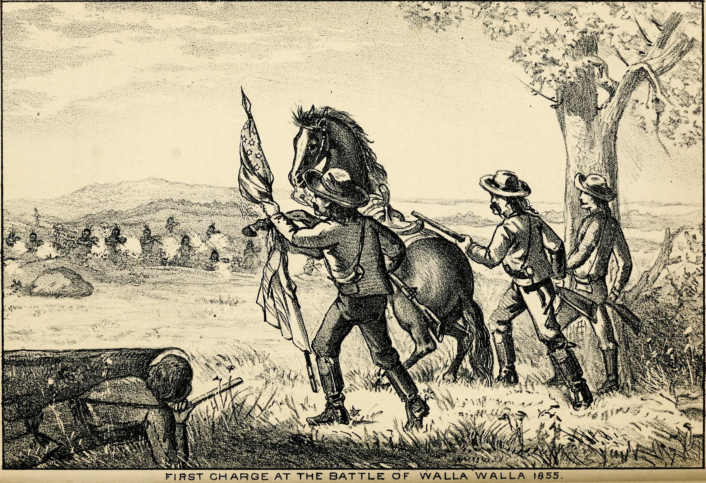
Washington State began its US history as a part of Oregon Territory. For a significant period, the general region was strongly disputed over with the British. However, it was in 1853 that Washington was declared its own territory, originally including the present borders but extending farther through Idaho and into modern day Montana. Shortly following this redrawing of boundaries, a 4 year period of War with the native Tribes began, following various disputes and revolts, leading to the Puget Sound War, Yakima War, and Spokane War throughout the state.
These Indian Wars remain fascinating as are all military disputes in this region. With the combination of the Salish Sea and Cascade/Olympic Mountain Ranges protection, military dispute becomes in this area an intense game where actual conflict can easily become impossible due to weather conditions. However, few true large scale military conflicts have taken place in Cascadia in USA history, with the Indian Wars being the prime example.
These decades also contained a few notable gold rushes, as Gold was found in the Yakama reservation, and later north of the border in British columbia. There are multiple locations in the Cascade Mountains where Gold Mining is still present today.
One of the most significant events of this period was The Pig War, a dispute between the British and Washingtonians that almost erupted into all-out war begin England and the USA.
1860s-1889:
Pre-statehood period
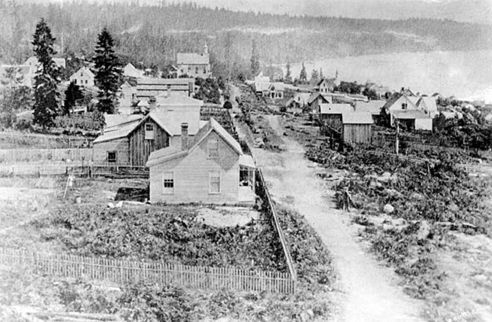
During this period, the Territory was greatly impacted by the US Civil War, though the Territory itself was largely uninvolved in the war, never sending any soldiers. However, due to the Civil War, the nearby British strongly considered seizing Washington Territory whilst the USA was distracted with war. However, out of fear of war with the US, British officials decided against this course of action. Which is unfortunate, as had they decided to declare war against the US in such a way, England would today belong to America. But after getting the crap beat out of them twice already by the US of A.
These years also saw a rise in Anti-Asian violence, largely due to the increasing amounts of cheap Chinese labor replacing the native US Citizens. Essentially, wealthy business owners were flooding these asians into the country for cheap labor, replacing the whites; a situation bad both for the US Citizens and the Asian immigrants. Unfortunately, the urgent need to remove the asians caused natives to act irrationally in attempts to throw them all out. The state government sided with the Chinese, and acted to protect them. These actions against the Citizens interests eventually lead to the local mayor and Police Chief to be voted out of office.
1889-1930s:
Industrial and Economic Development
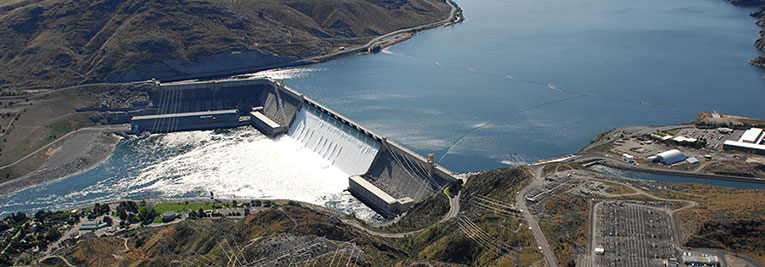
Washington State is one of the most forested states in the Union, as the most forested state West of the Mississippi, and also the state containing the highest percentage of speciifcally Coniferous forests, giving the state its nickname "The Evergreen State." Though the timber industry began in Washington in teh 1850s as a smaller system primarily selling wood to California, in the 1890s it began to grow into a huge major play in the Timber industry. By 1905, Washington was the USA's largest timber producer, and later the first Industrial Tree Farms in the World were started in Washington. Still today, timber is one of the largest industries in Washington.
This era also saw booms in mining, with major Coal mining beginning, which continued for over 100 years. There were also many Gold Rushes, with some of the largest being at Monte Cristo and Holden village, where Gold, Silver, and Zinc were mined. The mining industry today has mostly died out, despite the state still being very rich in mineral resources. However, mining activity is limited by wilderness laws and the important necessity to protect the natural beauty of the Cascade Mountains where these valuable minerals can be found.
Another major industrial impact in the history of this area is with Hydropower, which today is the main energy source for residents of the Cascadia region, due to the sheer power of the Columbia river, as the Columbia basin today has more than 400 dams on all its tributaries, producing immense amounts of sustainable power. The most notable is the Grand Coulee Dam, which when built was the largest concrete structure in the world, and still today is the largest concrete structure, standing 4 times larger than the Great Pyramid of Giza. The Grand Coulee Dam is also the largest energy producer in North America, as well as larger in size and energy production than anything in Europe or Africa, only surpassed by the dam on the Uruguay river in South America, as well as a few dams in Asia.
One of Washington's largest industries is the Apple Industry, of which Washington State is the world's leader. Washington grew from the 1820s to becoming the leading state in apple production in 1920, and in the mid 1900s, with refrigerated transportation technology, becoming a worldwide Apple industry leader. Apart from this, Washington and the PNW region is a world renowned Wine location, with many wineries and over 70,000 acres of vineyards in Washington alone. Furthermore, Washington state is often the Worlds Leader in beer Hops production (though sometimes outplaced by Germany), producing over 25% of the worlds hops supply. Along with this, the state has a growing Beer industry and a number of breweries, famous for IPAs. Which is unfortunate because IPAs aren't nearly as good as most other beers. But I digress.
Washington state also has the largest Ferry System in the USA, the Puget Sound Ferry System, which is also the second largest worldwide, carrying tens of millions of passengers and cars annually.
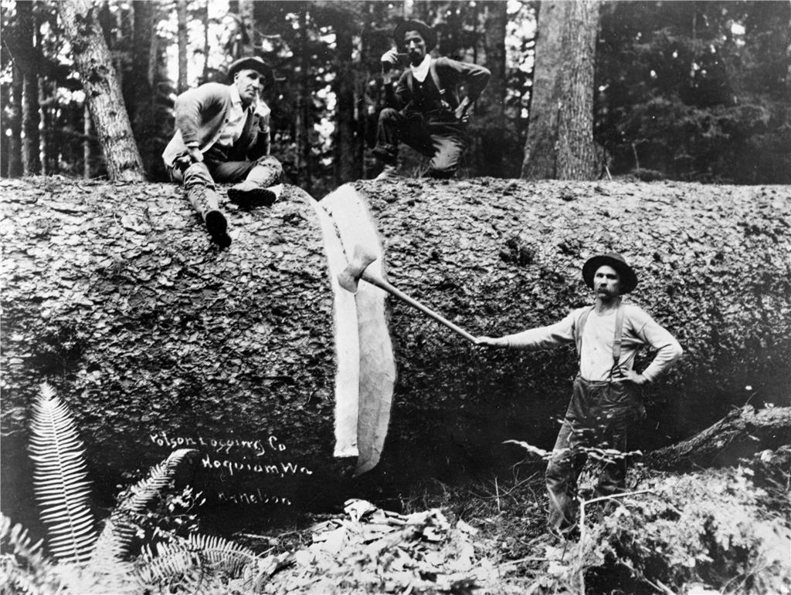
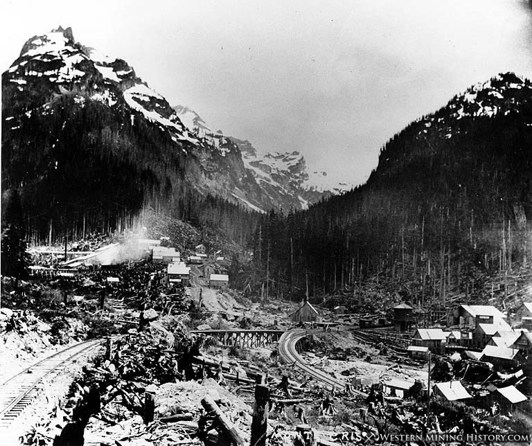
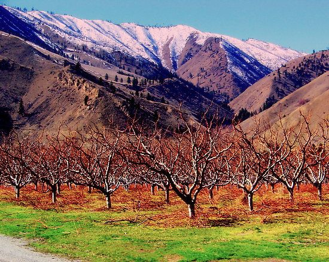
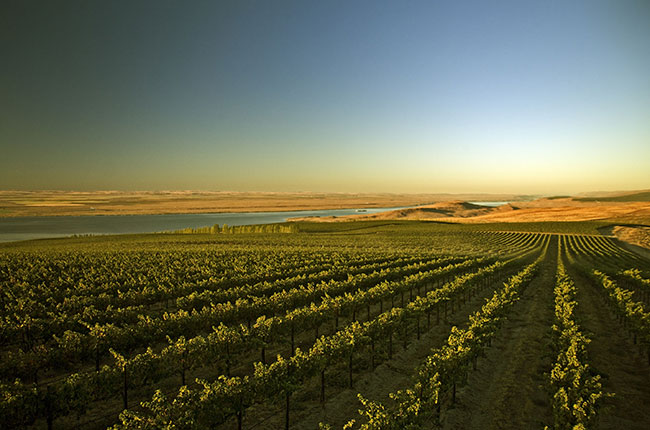
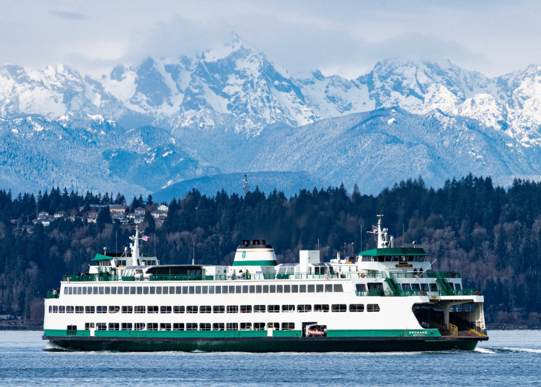
1930s-60s:
WWII Period
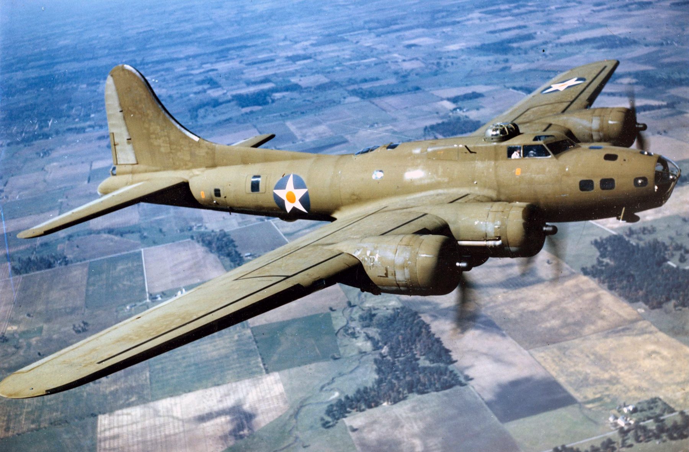
Unlike during the Civil War, Washington State was an essentialy part of the WWII war effort, with Boeing producing 100,000 aircraft and the Hanford Nuclear Site producing plutonium for one of the atom bombs dropped in Japan. The 15 Shipyards in Washington built many warships as well, and the Grand Coulee Dam provided the energy for producing around 1/3 of the nation's aluminum.
1960s-80s:
Post-War Period
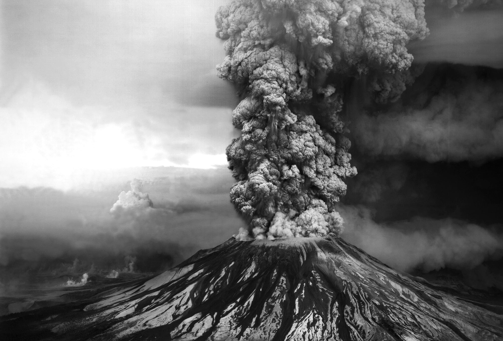
This period saw a large increase in the protected areas of natural beauty, with the establishment of the North Cascades National Park, which contains the must rugged, remote, and largest mountains in North America outside of Alaska. The incredibly impressive Highway 20 was built, a dream project that crossed through these mountains. This highway had been in the planning for nearly 100 years.
The most significant event in this time period was the eruption of Mount St Helens, the most studied Volcano in history. For more information on Mount St. Helens, press this link
80s-today:
Modern Development
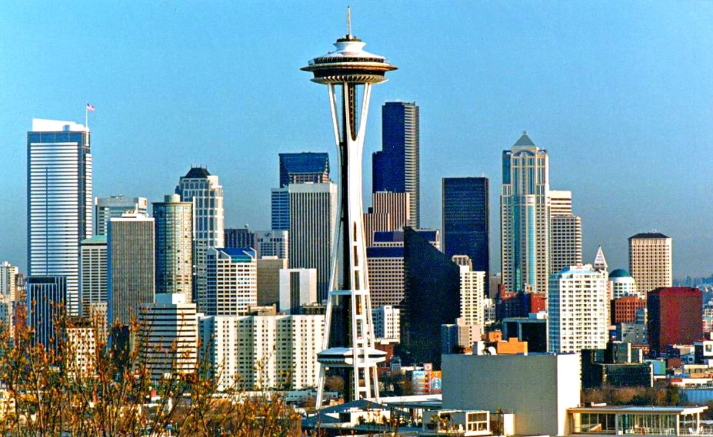
The 80s and 90s saw the beginning on many contemporary businesses in the general tech industry, such as Microsoft, Amazon, Expedia, Nintendo of America, and many others, along with other businesses such as Costco and Starbucks.
The 1990s saw Washington become the cultural center of the world for a brief time, and cultural center of the USA for a little longer. This happened through the grunge / Seattle youth culture explosion, which established itself through music, clothing style, and a general attitude / not specifically defined ideology rejecting the polished and opimistic culture of the 1980s, specifically reflecting how the youth of Washington felt about the direction of the world at the time, whether intentionally expressed or not. With key bands such as Nirvana, Pearl Jam, Soundgarden, and Alice in Chains along with many others leading the musical popularity, the Seattle Sound and clothing style bec ame predominant. The height of this dominance was roughly 1991-1994, with the death of Kurt Cobain (leader of Nirvana) leading to the end of the massive popularity of the style, though it took longer to be replaced, and its influence on culture in the Seattle area is still clear today.
It can be said that one only needs to travel to Kurt Cobain's hometown of Aberdeen, Washington to understand everything he ever said or sang, because Aberdeen is the most boring city in the entire world.
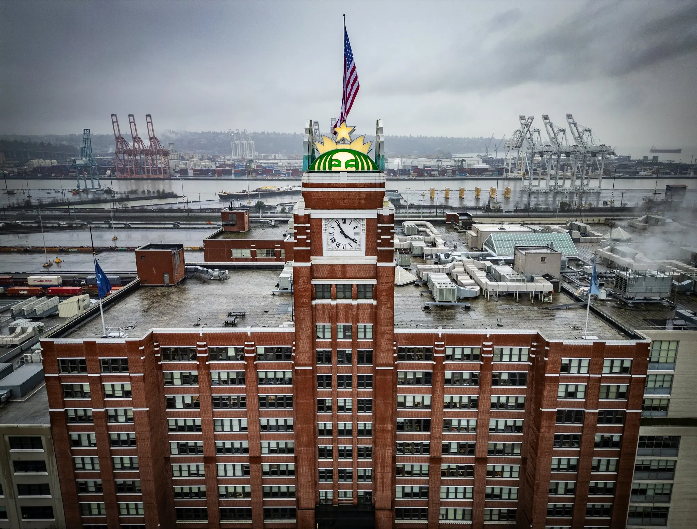
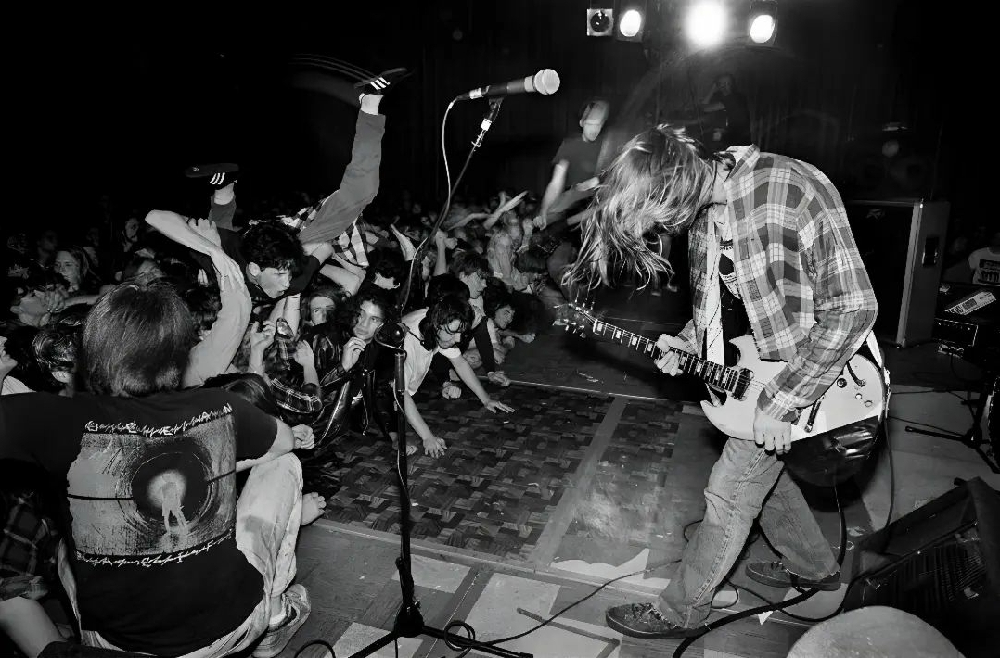

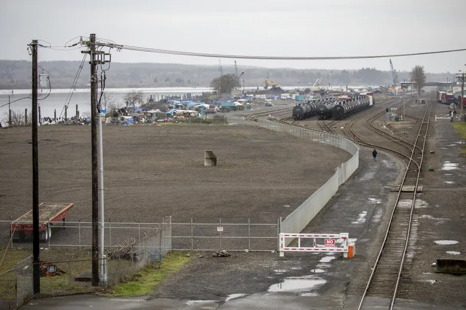